Eloise Caro Portfolio
Contact
@eloise.draw
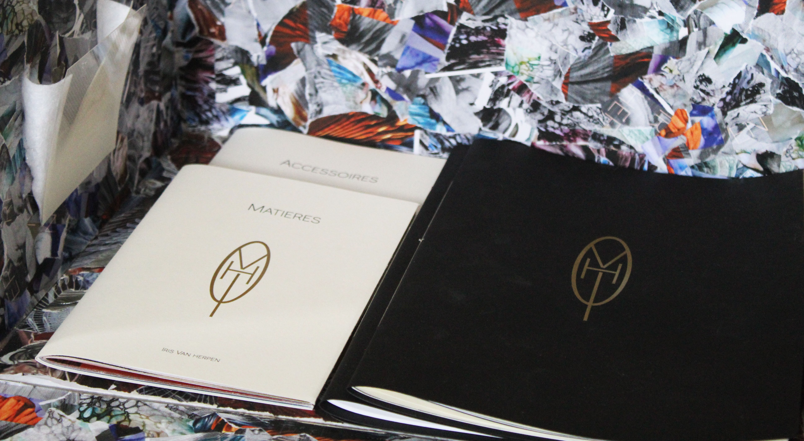 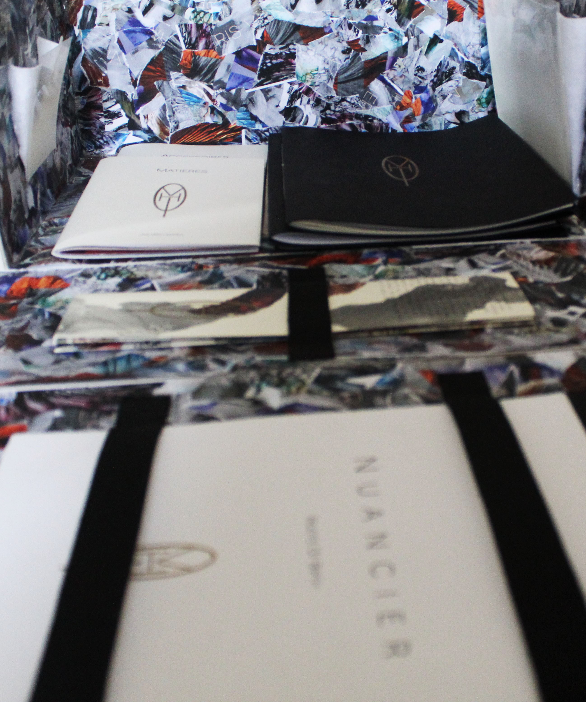 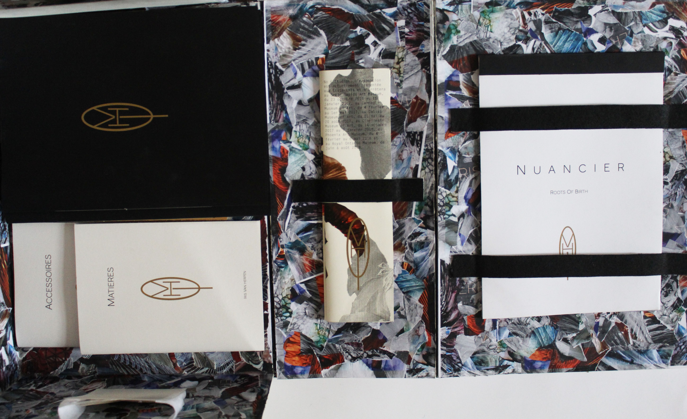 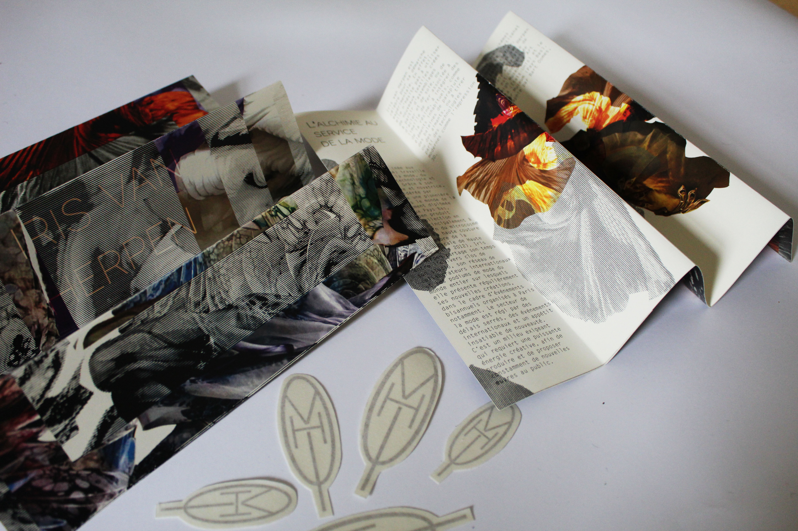 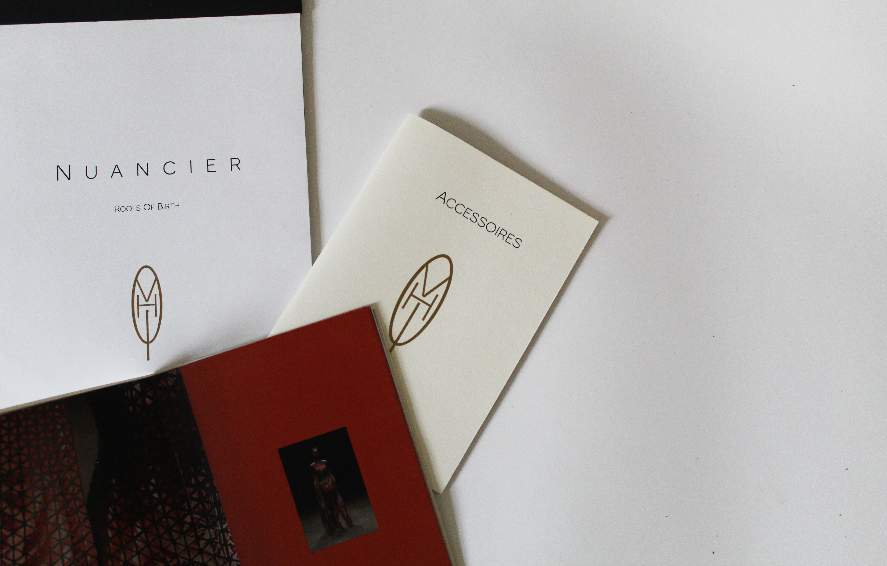 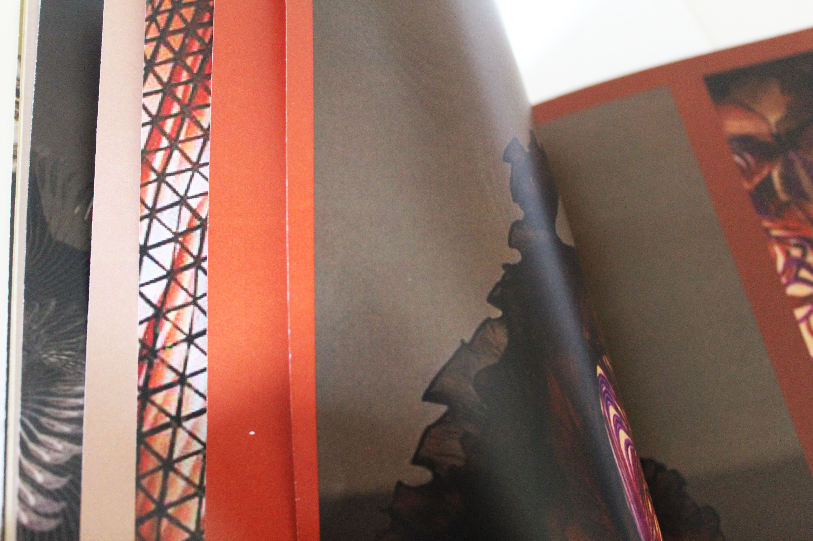 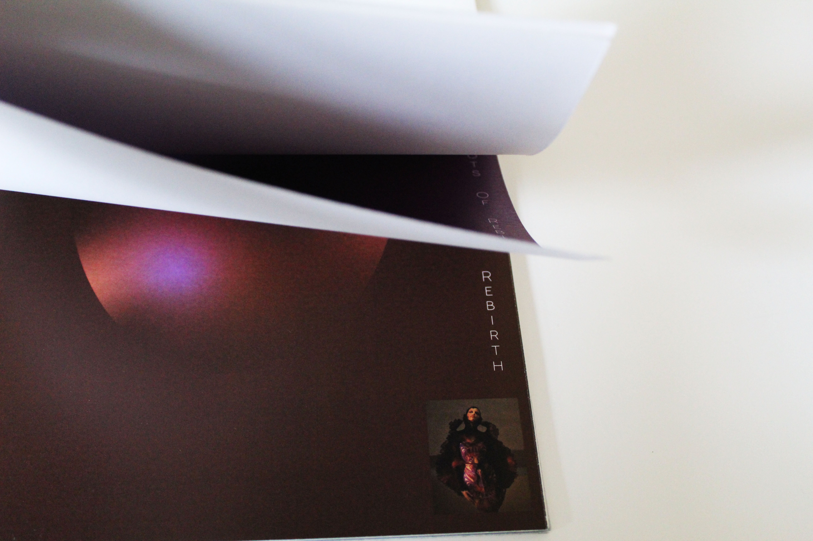 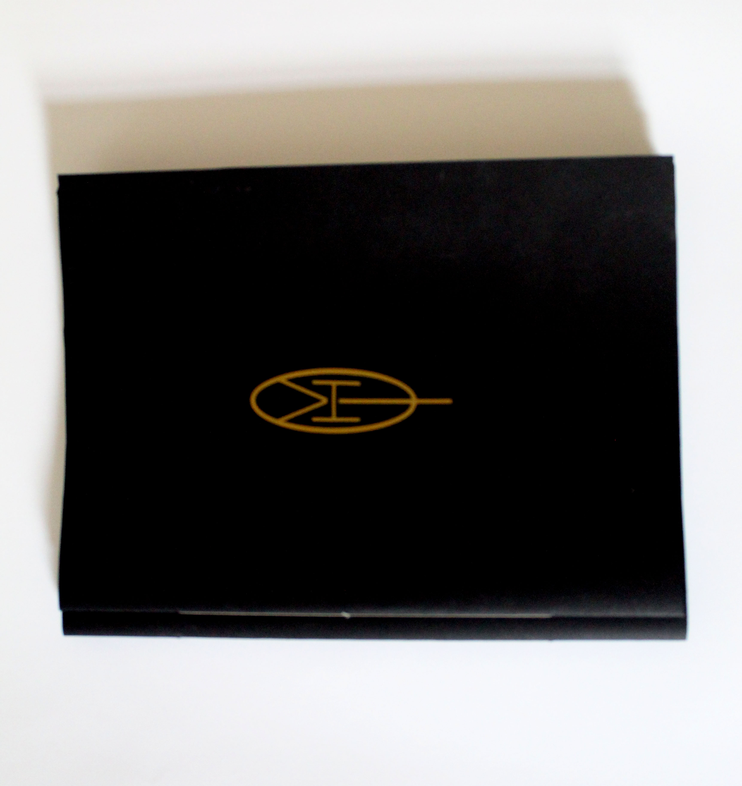 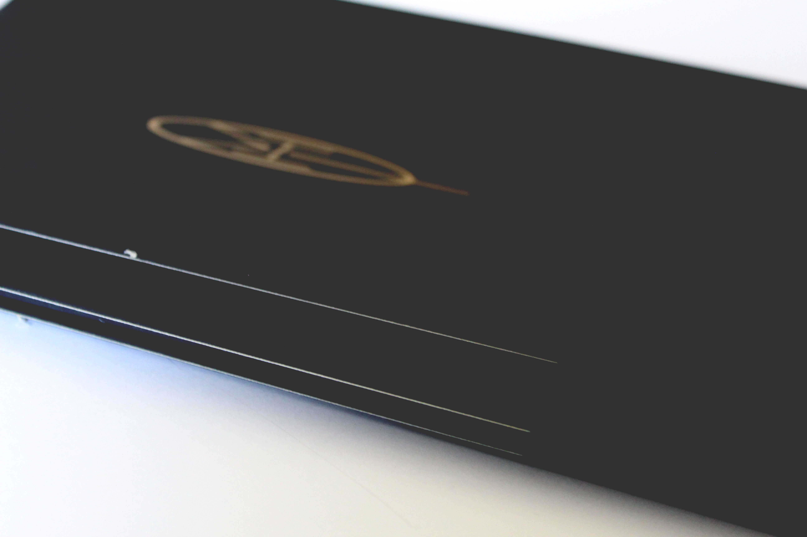 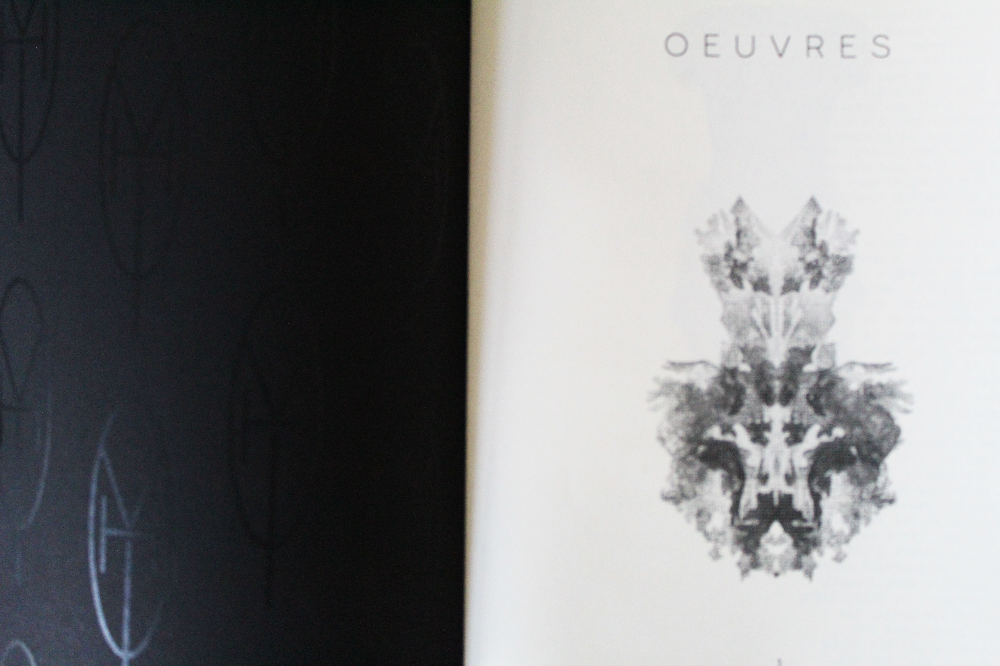 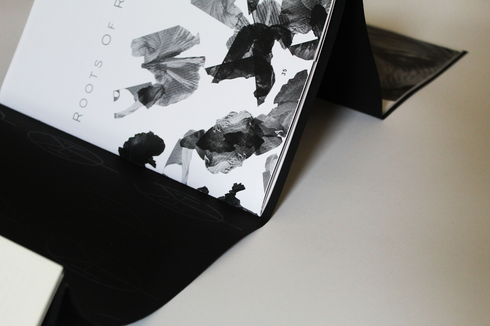 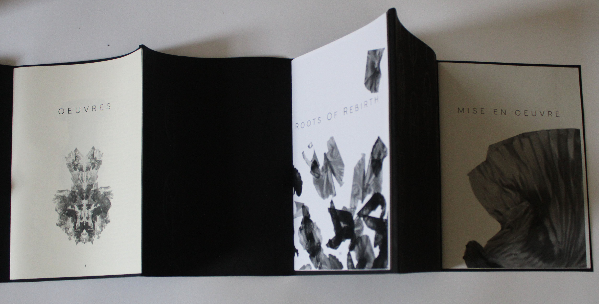 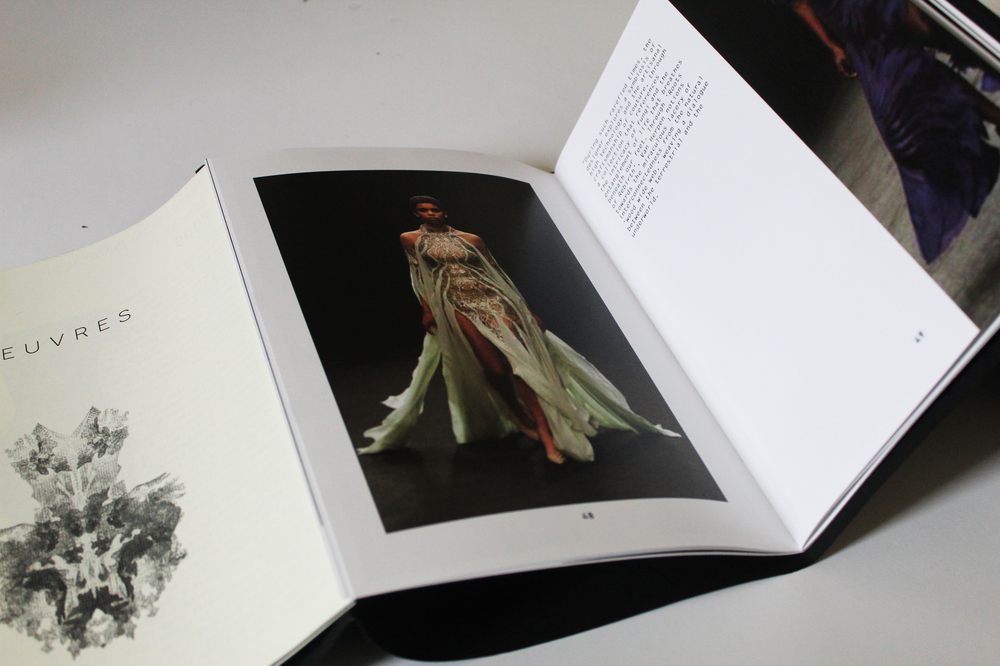
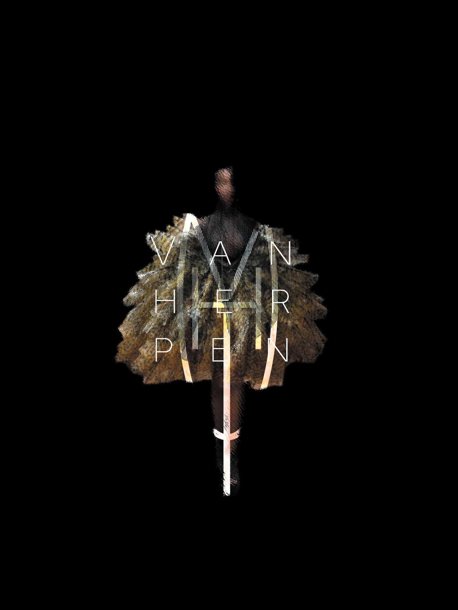 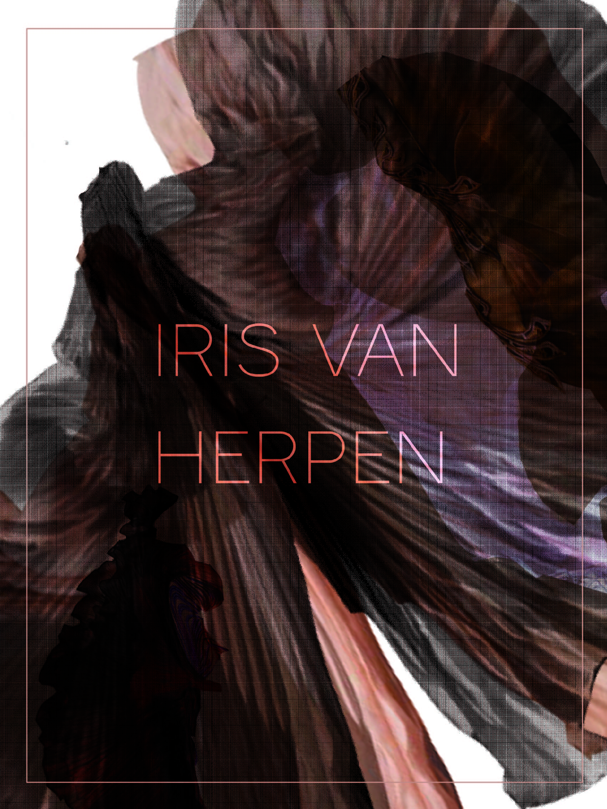
Livre d'artiste\\
Pour ce projet de livre d'artiste j'ai travailler sur la styliste de haute couture néérlandaise Iris Van herpen. J'ai donc réalisé un coffret s'inspirant des drappées et des couleurs de ses collections, comprennant une edition principale en 3 parties (leporello: mise en oeuvre, "Roots of rebirth", oeuvres), deux petites éditions (matières et accessoires), un nuancier sur la collection"Roots of rebirth", un dépliant retraçant le parcours de la styliste, que des stikers du monogramme crée pour le projet ainsi que 3 posters.
Retour Acceuil